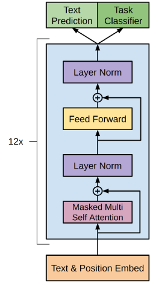
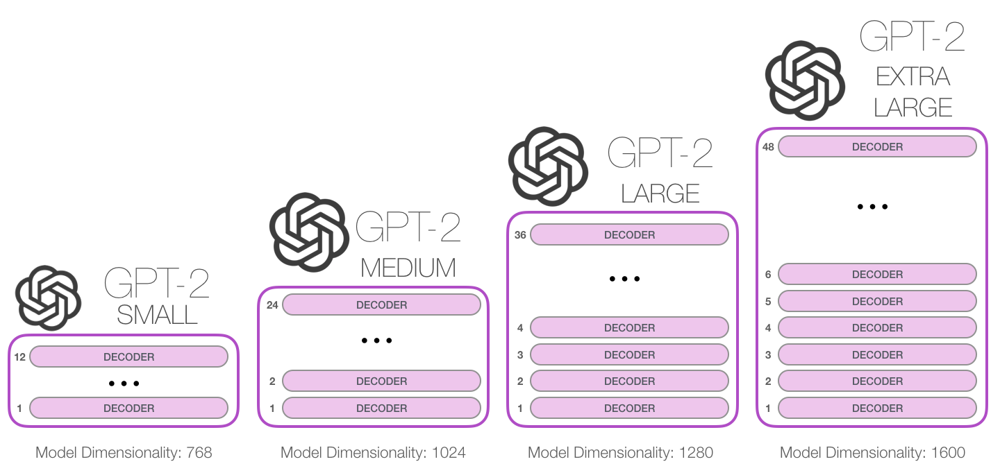
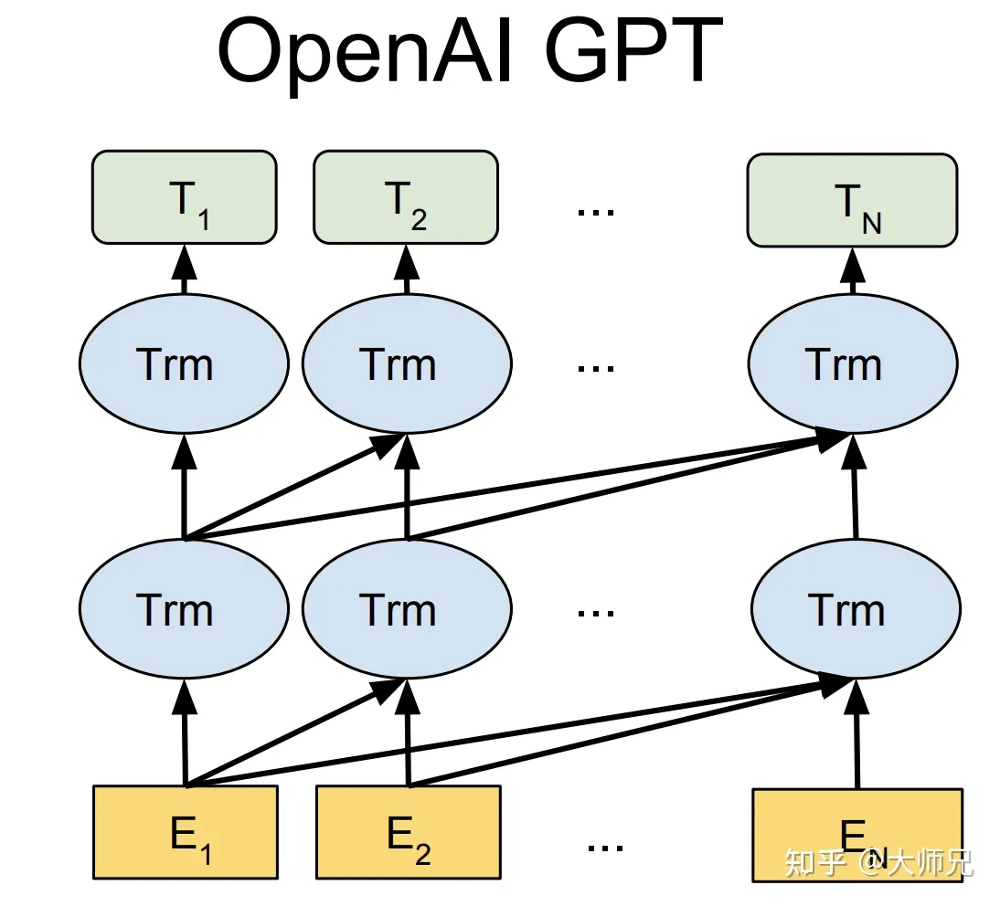
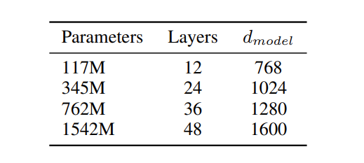
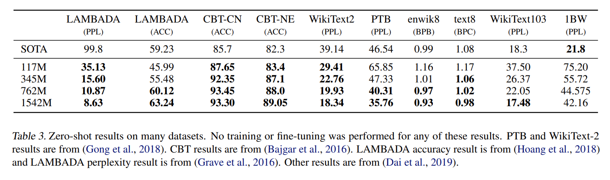

GPT-2学习笔记
GPT-2 学习笔记
背景和动机
GPT-1 展示出来，利用大量没有标注的数据，在特定语言任务中也能取得较好的性能。但是 BERT 的横空出世，做到了比 GPT-1 更好的性能，他用 Transformer 的 Encoder 训练了更大的模型。但是 GPT 的作者认为还是使用 Transformer 的 Decoder 更有前途。 supervised finetuning 有监督的学习只能造就模型在特定的训练集上称得上专家，一旦任务改变就不得不标记一个新的训练集进行训练 即 "single task training on single domain datasets" 方法。
两个问题
- 借助预训练提升性能，但是还是需要人工标注的有监督参数微调。
- 需要在下游任务中有一定量的标注数据，zero-shot 情况下表现不好。
GPT-2 表示，即使是一个语言模型，也可以在 Zero-Shot 情形下解决问题。无需任何参数的微调。
Zero-Shot
先介绍一个概念就是 Zero-Shot，就是说这个术语表示模型在没有事先接受下游任务的相关训练数据下执行任务的能力。在 NLP 当中就是处理未知词汇或者主题的能力。比如说一个模型在训练时没有见过某个特定主题的数据或者但是在测试的时候可以正确的分类相关文本，那么 Zero-Shot 能力就有了。
这种能力的实现通常涉及到使用预训练的模型，这些模型在大量数据上进行了训练，从而学到了通用的语言和知识表示。这样的模型能够泛化到新领域或任务，即使它们在训练时没有见过相关的数据。
方法
一般的语言模型给的输入是 P(输入|输出)，但是 OpenAI
公司的 GPT 团队的 GPT 模型是 P(任务,输入|输出) 的模式。
GPT-2 的核心是语言建模，语言建模就是从一组样例 \((x_1, \ldots, x_n)\) 中进行无监督分布估计。每个例子包含一个不定长序列 \(\{s_1, \ldots, s_m\}\)
\[ P(x) = \prod\limits_{i = 1} ^ n p(s_n \vert s_1, \ldots, s_{n - 1}) \]
我觉得这个概率有问题啊，看起来模型好像是做的最大化这个事情
\[ \mathcal{L}(x) = \sum\limits \log p(s_i\vert s_{i - k}, \ldots , s_{i - 1}) \]
式子的意思是让 GPT 只看到前 \(k\) 个单词来推理新的单词是什么，根据新的词是什么来计算误差，使用随机梯度下降进行训练。

这是 GPT-1 中一个 Decoder 块的结构就如图所示。
但是 GPT2 有调整，比如说在每个 sub-block 之前都有一个 Layer normalization，并且在最后一个块后面也添加了一个 Layer normalization。关于初始化考虑了残差路径上随模型深度的累积。我们在初始化时将残差层的权重缩放为 \(\frac{1}{\sqrt{N}}\)。

可以看到 GPT-2 是不断的堆叠 Decoder 块。

这就是 GPT 工作的示意图，用公式表示出来就是
\[ \begin{aligned} &h_0 = SW_e + W_p \\ &h_l = \text{Decoder\_bock}(h_{l - 1}) \\ &p(u) = \text{softmax}(h_n W_e ^ T) \end{aligned} \]
GPT-2 生成文本的过程实际上是一个自回归的过程，每次生成一个 token，然后根据之前生成的东西来生成下一个 token。
有时候生成的词语会造成循环，为了避免这种情况的产生，可以使用 Top-k，从出现概率前几高的里面随机一个生成出来，而不是每次都选择概率最高的。
GPT-2 中一次训练的 batch size 变成了 512，然后还有就是上文可以看到的长度也就是 \(k\) 变成了 1024。
输入表示
GPT-2 好像在这方面也做出来了调整，当时的大语言模型在处理输入问题上如小写化、标记化和词汇表外的标记，这些步骤限制模型能够模拟的字符串空间。字节级的 LM 通过转为 UTF-8 编码来解决问题，但是字节级的 LM 性能远不如单词级的 LM。
考虑 BPE 算法怎么应用到模型中去即可，字节级别的只需要 256 个基本词汇就可以，但是好像太长了？怎么办，接着 BPE 就可以，但是文章里还说了一点是，对于不同类别的符号是禁止互相 merge 的，但是空格可以。GPT
按照贪心合并 40000 次，加上最开始 256 个，还有最后
</w> 符号，一共是 50257 个单词表。
模型的不同型号

训练数据集
感觉是 OpenAI 的常用策略，就是使用海量的数据训练模型。他们想要让 GPT 适应通用任务，那么就必须使用大量包含大多数种类的数据进行训练，他们选择在网上爬数据解决这个问题。
具体而言，他们在一个叫做 Reddit 的网站上爬取了所有 \(\ge 3\) 个赞的链接（包含文章，推送等等）（获得赞表明这些链接不是无用的）。他们使用这种方法抓取了 4500 万个网页链接，然后在链接的 HTML 上抓取文本信息，然后对于这些网页进行了一些简单的人工处理（包括不限于查重和一些启发式清理（文章具体没说怎么清理的）），最后的到了一个超过 800 万文档，超过 40GB 的数据集 WebText，他们还删除了所有包含 Wikipedia 的文档，说是会和测试评估任务重叠（？这里不太理解那里会重叠）
预训练
这是 WebText 里面用来训练法语和英语自然翻译的一段文字，"Mentez mentez, il en restera toujours quelque chose," 是法语句子，"Lie lie and something will always remain." 是英文句子，而我们在无监督训练语言模型的时候，并没有告诉模型要做 translation 的任务，但是我们的文本中却有 which translates as 这样的字样。换句话说，这一与具体下游任务任务相关的信息，竟然可以通过具体下游任务任务无关的无监督预训练过程学习到。
实验结果
在八个数据集上有七个到达了 SOTA。

- 儿童读物测试（CBT）对于词的认知，达到了 SOTA，其中任务是预测10个可能的省略单词中的哪一个是正确的。
- LAMBADA测试，预测一个句子的最后一个单词，这个把 LM 正确性从 19% 提高到了是 52.66%，添加了停止词检测器之后提高到了 63.24%，提高了 SOTA 4%。
- 阅读理解，CoQA对话问答数据集包含7个不同领域相关的文档，在无监督情况下达到了 55 F1 的水平。
- 概括，在 CNN 和 Daily Mail 上进行概括内容，采取 Top-k 随机采样，生成的内容类似于摘要，但是会关注文章的最近内容和容易混淆的细节。任务提示被删除时性能也会严重下滑。
- 翻译，GPT-2 的翻译做的不是很理想，但是仍然出乎意料，因为他们把非英语从 WebText里面删了。
- 回答任务好像也有些差劲。
F1 分数是用来衡量模型在分类任务中的性能的一种指标。它是精确率和召回率的调和平均数，表示为 \(F_1 = 2 * \frac{精确率 * 召回率}{精确率 + 召回率}\)。 F1分数越高，说明模型的性能越好。在上文中，提到的55 F1意味着模型在分类任务中的F1分数为55，具体而言，它的精确率和召回率都达到了55%。
还有一个很重要的现象，随着模型规模的扩大，Zero-Shot 的性能在提升。